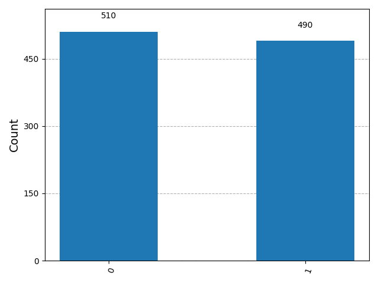
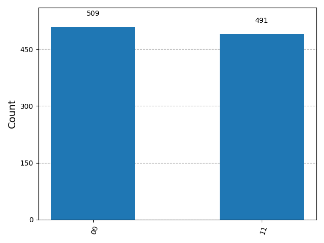

QUT Physics Student exploring quantum computing, simulation, and emerging computational approaches to physical systems.
I am a physics student with a growing interest in quantum computing, modelling, and computational physics. This portfolio showcases my introductory work using IBM Quantum and Qiskit to simulate core quantum phenomena and interpret their measurement outcomes.
This project explores two foundational concepts in quantum computing: superposition and entanglement. Using IBM Quantum tools and Qiskit, I simulated quantum circuits and analysed their output through measurement histograms.
A Hadamard gate was applied to a single qubit to place it in a superposition state, producing an approximately equal probability of measuring 0 and 1.

A CNOT gate was used to entangle two qubits, resulting in correlated measurement outcomes dominated by the 00 and 11 states. This demonstrates a basic example of non-classical quantum correlation.
